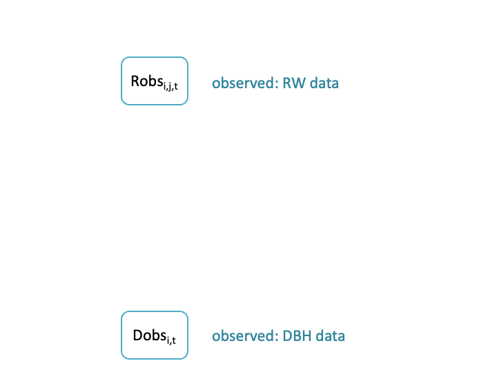
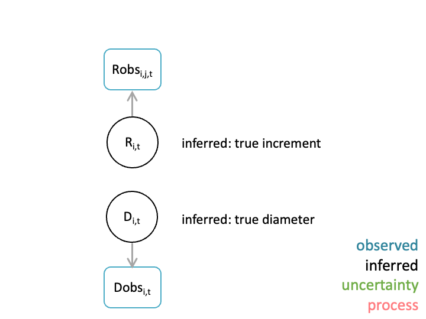
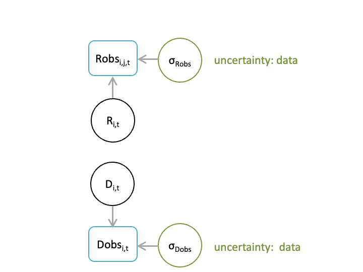
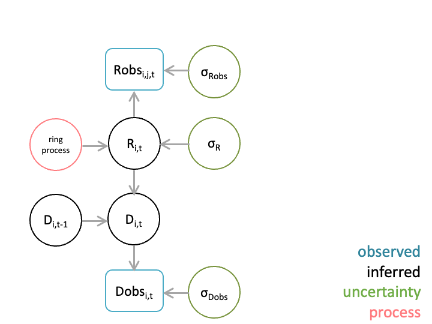

Module 4: Model Introduction
State-space model for estimating biomass
We are using Bayesian statistical inference to estimate tree growth given RW and/or Census data. This workflow is motivated by the desire to: account for and quantify the uncertainty in our understanding (of data and processes) of tree growth; integrate multiple data types that inform about tree growth; and using a framework that allows for estimation of growth for trees with incomplete data.
Bayesian inference makes it possible to achieve these objectives.
Observed growth
There are two types of observations of tree growth considered here: RW and Census.
The ring width datasets we are working with contain both ring-width time series from one or more tree cores and dbh at the time of coring. The census datasets contain repeat dbh measurements for some number of trees. Census remeasurement intervals are often 5-10 years.
So in short: RW data is annually resolved, while census data is not.

RW
We denote the ring-width observations by \(\text{Robs}\). For tree number \(i\), core \(j\), and year \(t\), the observed ring-width is represented by \(\text{Robs}_{i, j, t}\).
Note that not all trees need to have RW observations for all years in this framework (so it’s not a problem that the temporal extent of the ring-width time series vary among trees), and not all trees need to have the same number of cores.
DBH
We denote the diameter observations by \(\text{Dobs}\). For tree number \(i\) and year \(t\), the observed diameter is represented by \(\text{Dobs}_{i, t}\).
Now we note that not all trees need have diameter observations for each year, and the years for which trees do have measurements need not be the same among all trees.
Also, if it were the case that diameter was measured multiple times when census (for example if each of the three field techs measured the diameter of each tree), then we could include an additional subscript as we did for the ring-width observations.
Inferred growth
The objective is to quantify tree growth with uncertainty. We assume that there are some latent (unobserved) states that represent what we sometimes call the true increment and diameter. This description itself isn’t quite the truth (pun intended). These latent states quantify the best estimate of increment and diameter given the data and model. Tree growth isn’t perfectly circular; for a given year, ring-width might vary among cores.
Increment
We denote the latent increment by \(\text{R}\). For tree number \(i\), and year \(t\), the latent increment is represented by \(\text{R}_{i, t}\).
Diameter
We denote the latent diameter by \(\text{D}\). For tree number \(i\), and year \(t\), the latent diameter is represented by \(\text{D}_{i, t}\).

Observation uncertainty
We account for observation uncertainty in both the RW and diameter data. This uncertainty represents not only measurement uncertainty, but also uncertainty related to processes that result in observations that vary around the latent increment and diameter. For example, asymmetric growth processes.
Both increment and diameter observations vary around distributions with a central tendency determined by the latent increment and diameter, and with spread (dispersion) determined by parameters \(\sigma_\text{Xobs}\) and \(\sigma_\text{Dobs}\).
More formally we write
\(\text{Robs}_{i, j, t} \sim [\text{R}_{i, t}, \sigma_\text{Xobs}]\)
and
\(\text{Dobs}_{i, t} \sim [\text{D}_{i, t}, \sigma_\text{Dobs}]\).

Growth process
In this workflow, latent increment is distributed with a central tendency that is the sum of a tree specific effect (\(\beta_i\), for tree \(i\)) and a species-time effect (\(\beta_{t, k}\)), and a spread (dispersion) described by \(\sigma_{\text{x}}\).
This species-time effect \(\beta_{t, k}\) is analogous to a forest growth chronology: it describes the common growth signal through time for each species.
This increment model can be extended to account for additional processes that determine annual growth. For example, we could include size, competition, or climate effects.
Using statistical notation, we write that
\(\text{R}_{i, t} \sim [\beta_i + \beta_{t, k}, \sigma_{\text{x}}]\)
Then, latent diameter for tree \(i\) at time \(t\), \(\text{D}_{i, t}\) is a deterministic function equal to the diameter of that tree from the previous year, \(\text{D}_{i, t-1}\), plus twice the increment \(\text{R}_{i, t}\) (making sure the units are consistent). In formal notation, we have
\(\text{D}_{i, t} = \text{D}_{i, t-1} + 2 \cdot \text{R}_{i, t}\).

Initial diameter
Priors
In Bayesian inference, the posterior distribution which describes \(P(model|data)\) is proportional to the likelihood \(P(data|model)\) times the prior \(P(model)\). We need to define prior distributions for model parameters. There are many different ways to define prior distributions.
For example,
\(\beta_i \sim \text{normal}(\beta_0, \beta_\text{SD})\) and
\(\beta_0 \sim \text{normal}(0, 1000)\) and
\(\beta_\text{SD} \sim \text{uniform}(0, 1000)\).
Other model parameters also require defined prior distributions.
Parameter estimation
After formulating the Bayesian state space model, we would like to be able to infer the parameter posterior distributions. In a Bayesian paradigm, this typically requires using a sampling algorithm- a set of rules that we follow to get posterior distribution samples. There are different algorithms we can use, and different software that implements these algorithms.
Most algorithms rely on a markov chain monte carlo algorithm. These algorithms involve iteratively: proposing new states (parameters), using a predefined criterion to decide if they are accepted, and either moving to this state (acceptance) or remaining in the current state (rejected). This iterative process is repeated many times, and makes it possible to explore the posterior distribution. The result is a set of posterior samples used to make inference about the parameters of interest.
Stan
Here we use the statistical software Stan to estimate parameters. Stan interfaces to R via a package called rstan (cmdstan is another package that is used.)
Stan by default uses something called the Hamiltonian Monte Carlo sampling algorithm.
In this workshop, we are going to implement the model ourselves using Stan. To do this, we need a model written in Stan (file with .stan extension). Then we will fit this model using the RStan interface (R script). To use Stan, the model needs to be written in the Stan language (a text file with a .stan extension). A Stan model has three required blocks:
data block: declare data types, their dimensions, restrictions, and names.
parameters block: declare parameter types, dimensions, restrictions, and names.
model block: include sampling statements.
We won’t talk to much about the NUTS and bolts of STAN programming in this workshop, refer to: Stan language manual. (Stan uses what is called a NUTS algorithm so this is a terrible pun.)
Example linear regression model specification
Data Block
data {
int<lower=1> N; // number of observations
vector[N] x; // the predictor
vector[N] y; // the outcome
}
Parameter Block
parameters {
real alpha; // intercept
real beta; // slope
real<lower=0> sigma; // standard deviation
}
Model Block
model {
// priors
alpha ~ normal(0, 10);
beta ~ normal(0, 10); // priors for beta
sigma ~ cauchy(0, 5); // prior for sigma
// likelihood
y ~ normal(alpha+beta*x, sigma);
}
As an example, a linear regression in stan would be defined as follows:
data {
int<lower=1> N; // number of observations
vector[N] x; // the predictor
vector[N] y; // the outcome
}
parameters {
real alpha; // intercept
real beta; // slope
real<lower=0> sigma; // standard deviation
}
model {
// priors
alpha ~ normal(0, 10);
beta ~ normal(0, 10); // priors for beta
sigma ~ cauchy(0, 5); // prior for sigma
// likelihood
y ~ normal(alpha+beta*x, sigma);
}
The Growth Model outlined above is a bit more complex than a linear regression, but as a dynamic linear model, it has a linear model in the liklihood function of the Ring Width process model:
\(\text{R}_{i, t} \sim [\beta_i + \beta_{t, k}, \sigma_{\text{x}}]\)
In the next module, we will show an example of how to fit the state-space growth model to estimate growth and diameter from trees using only ring width data.